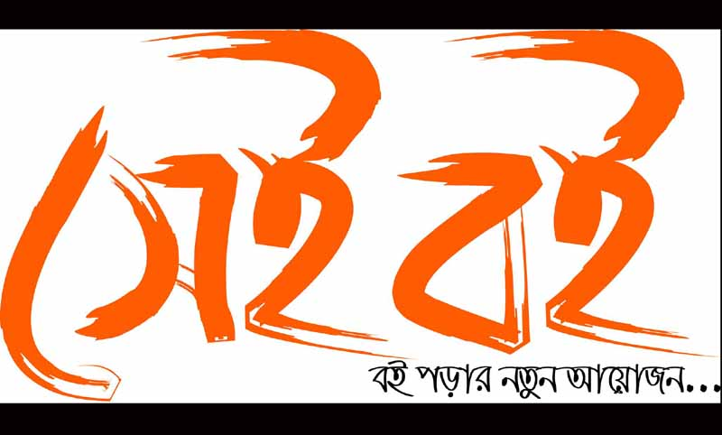
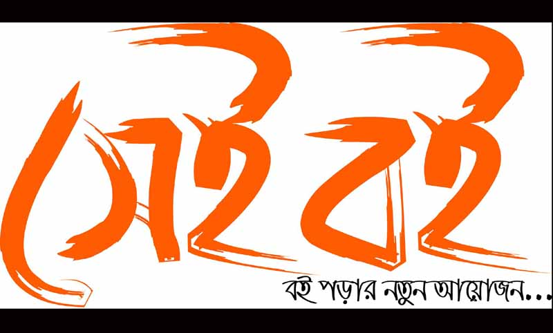
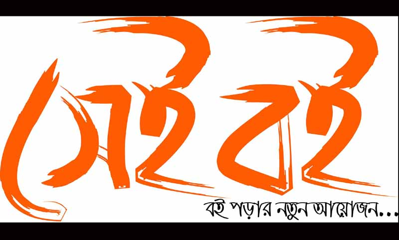

এক বৃদ্ধ ব্যক্তি মহানবী (স.) এর সমীপে উপস্থিত হল, কিন্তু উপস্থিত ব্যক্তিরা কেউই তার সম্মান করলো না এবং তাকে জায়গা দিতে অলসতা দেখালো। (উপস্থিতদের এহেন আচারণে অসন্তুষ্ট হয়ে) মহানবী (স.) বললেন : ‘যারা আমাদের ছোটদেরকে স্নেহ করেনা এবং বৃদ্ধদের প্রতি সম্মান দেখায় না, তারা আমাদের হতে নয়’। (মিশকাতুল আনওয়ার ফি গুরারিল আখবার,)
Home
English
Islam
All Websites
Others
Contact
MPL
Google
Youtube
Faccebook
Gmail
G Drive
G Translate
Dictionary
Calculator
Salat Time
Instagram
Twitter
World clock
বিশ্বের জনসংখা সম্পর্কে জানুন
বিজ্ঞান ও প্রযুক্তির সবকিছু বাংলায়

প্রথম আলো পত্রিকা
এদেশে সবাই শিক্ষানুরাগী ও সমাজসেবক : দারোগার শোকসংবাদেও লেখা হয়, ‘তিনি শিক্ষানুরাগী ও সমাজসেবক ছিলেন। আগে প্রতিভাবানেরা বিদেশ যেতো; এখন প্রতিভাবানেরা নিয়মিত বিদেশ যায়।“ কল্পনা জ্ঞানের চেয়ে আরো গুরুত্বপূর্ণ ”।“নদীর এপার কহে ছাড়িয়া নিশ্বাস, ওপারেতে সর্বসুখ আমার বিশ্বাস। নদীর ওপার বসি দীর্ঘশ্বাস ছাড়ে; কহে, যাহা কিছু সুখ সকলি ওপারে। ” অপেক্ষা হলো শুদ্ধতম ভালোবাসার একটি চিহ্ন। সবাই ভালোবাসি বলতে পারে। কিন্তু সবাই অপেক্ষা করে সেই ভালোবাসা প্রমাণ করতে পারে না। শিক্ষার শেকড়ের স্বাদ তেঁতো হলেও এর ফল মিষ্টি।যদি তা সঠিক হয় তবে মাত্র একটি ধারণা আমাদের বহুসংখ্যক অভিজ্ঞতা অর্জনের শ্রম থেকে বচিয়ে দেয়। দেখবার জন্য আমাদের চোখের যেমন আলোর প্রয়োজন, ঠিক তেমনী কোনো প্রত্যয় অর্জন করবার জন্য আমাদের ভাবনার প্রয়োজন।। নতুন জানার যেমন যন্ত্রনা আছে, তেমনি আনন্দও আছে।।জ্ঞানীরা ধনসঞ্চয় করেন অর্থপিশাচদের মুখাপেক্ষী না হওয়ার জন্য।।জানা সত্ত্বেও মেনে না চলার চেয়ে না জানাই ভালো।। মূর্খের উপাসনা অপেক্ষা জ্ঞানীর নিদ্রা শ্রেয়।।বিশ্বের সবচেয়ে অজ্ঞেয় বিষয় তা বোধগম্য হয় না।।সমগ্র বিজ্ঞান দৈনন্দিনের একটি পরিশোধন চিন্তা ছাড়া আর কিছুই না।। যে কখনও ভুল করেনা। সে নতুন কিছু করার চেষ্টা করে না।। যেকোন বুদ্ধিমান বোকা জিনিষকে বড় করতে পারে, আরো জটিল, এবং আরও তীব্র। এটি একটি প্রতিভাকে স্পর্শ করে, এবং সাহস অনেকটা বিপরীত দিকে অগ্রসর হয়।।। একজন ঘুমন্ত ব্যক্তি আরেকজন ঘুমন্ত ব্যক্তিকে জাগ্রত করতে পারে না।। অজ্ঞের পক্ষে নীরবতাই হচ্ছে সবচেয়ে উত্তম পন্থা। এটা যদি সবাই জানত তাহলে কেউ অজ্ঞ হত না।। আমরা যতই অধ্যয়ন করি ততই আমাদের অজ্ঞানতাকে আবিষ্কার করি।। যারা আমাকে সাহায্য করতে না করে দিয়েছিল আমি তাদের প্রতি কৃতজ্ঞ, কারন তাদের ‘না’ এর জন্যই আজ আমি নিজের কাজ নিজে করতে শিখেছি।। আমরা যা শিখছি তা যদি আমাদের বিশ্বাসের উপর কোন প্রভাব ফেলতে না পারে, আমাদেরকে আল্লাহর কাছাকাছি নিয়ে যেতে না পারে, আমাদের বিশ্বাসকে আরো মজবুত করতে না পারে তাহলে এর অর্থ হচ্ছে আমাদের উদ্দেশ্যে, নিয়্যতে ভুল আছে।। অন্যদের ভুল থেকে শিক্ষাগ্রহণ করুন এবং সেইরকম মানুষ হয়ে যাওয়া থেকে নিজেকে বিরত রাখুন যাদের ভুলগুলো থেকে অন্যেরা শিক্ষাগ্রহণ করে।।। বিষ থেকে সুধা, নোংরা স্থান থেকে সোনা, নিচ কারো থেকে জ্ঞান এবং নিচু পরিবার থেকে শুভলক্ষণা স্ত্রী – এসব গ্রহণ করা সঙ্গত।। শিক্ষার চূড়ান্ত ফল হচ্ছে সহনশীলতা।।ধর্ম ও নৈতিকতার শিক্ষা সন্তানের জন্য সবচেয়ে বড় সম্পদ।।যেই শিক্ষা গ্রহন করে যেই শিক্ষার গুণে গুনান্নিত হয়ে ছেলে মেয়ে সাজে, মেয়ে ছেলে সাজতে পছন্দ করে, ঐ শিক্ষাকে জ্ঞানীরা শিক্ষা না জাতীর জন্য বিষ বলে গন্য করেছেন।। বড় বড় নামকরা স্কুলে বাচ্চারা বিদ্যার চাইতে অহংকার টা বেশি শিক্ষা করে।।। মনুষ্যত্বের শিক্ষাটাই চরম শিক্ষা আর সমস্তই তার অধীন।।এদেশের শিক্ষাকে রাজনীতি মুক্ত করা না গেলেও রাজনীতিকে শিক্ষা মুক্ত করা গিয়েছে।। শিক্ষা হচ্ছে মানুষের মধ্যে ইতোমধ্যে থাকা উৎকর্ষের প্রকাশ।।একজন প্রাইমারি স্কুলের শিক্ষকের বেতন কেন একজন দারোয়ানের মতো হবে? কেন তাঁদের সঙ্গে আপনারা পিয়নের মতো আচরণ করবেন? যদি তাঁদের সঙ্গে দারোয়ানের মতো আচরণ করেন, আপনার ছেলেমেয়েদেরও দারোয়ানের মনোবৃত্তি হবে।।। বৈষম্য কমাতে শিক্ষা ব্যবস্থার ওপর জোর দিতে হবে। বর্তমান শিক্ষা ব্যবস্থা আমূল পরিবর্তন করতে হবে। আমাদের যে শিক্ষা ব্যবস্থা হচ্ছে সেটা মানুষকে চাকরির দিকে নিয়ে যায়। কিন্তু আমাদের উদ্যোক্তা তৈরি করতে হবে।। যখন একা থাকার অভ্যাস হয়ে যায় ঠিক তখনি সৃষ্টিকর্তা কিছু মানুষের সন্ধান দেন। যখন তাদেরকে নিয়ে ভালো থাকার অভ্যাস হয়ে যায়, ঠিক তখনি আবার একা হয়ে যেতে হয়।। আমাদের দেশের শতকরা নব্বই জনই অশিক্ষিত,অথচ কে তাহাদের বিষয় চিন্তা করে? এইসকল বাবুর দল কিংবা তথাকথিত দেশহিতৈষীর দল কি?।। এই সৌরমন্ডলের এই পৃথিবীর এক কীর্তনখোলা নদীর পাড়ে যে-শিশুর জন্ম । দিগন্তবিস্তৃত মাঠে ছুটে বেড়ানোর অদম্য স্বপ্ন যে-কিশোরের । জ্যোৎস্না যাকে প্লাবিত করে । বনভূমি যাকে দুর্বিনীত করে । নদীর জোয়াড় যাকে ডাকে নশার ডাকের মতো । অথচ যার ঘাড়ে চাপিয়ে দেয়া হয়েছে ঔপনিবেশিক জোয়াল গোলাম বানানোর শিক্ষাযন্ত্র । অথচ যার ঘাড়ে চাপিয়ে দেয়া হয়েছে এক হৃদয়হীন ধর্মের আচার । অথচ যাকে শৃঙ্খলিত করা হয়েছে স্বপ্নহীন সংস্কারে ।।।।

 

.jpeg)